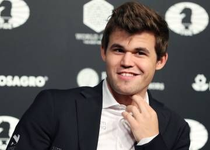

♛ Chess Blog

posted by Achyut Singh on Thursday, December 15 th 2022
Chess : The Universe of Possibilities
There are between 1078 to 1082atoms in the observable universe. That’s between ten quadrillion vigintillion and
one-hundred thousand quadrillion vigintillion atoms. Which is a lot. But...amazingly, there are even more
possible variations of chess games than there are atoms in the observable universe.
This is the Shannon Number and represents all of the possible move variations in the game of chess. It is
estimated there are between 10111 and 10123 positions (including illegal moves) in Chess.

Chess is often cited by psychologists as an effective way to improve memory function. Also allowing the mind to
solve complex problems and work through ideas, it is no wonder that chess is recommended in the fight against
Alzheimer's. Some contend that it can increase one’s intelligence, though that is a more complex topic. The
effects of chess on young individuals had led to chess being introduced in school districts and various
countries. It has been shown to improve children’s grades and other positive effects as well.
What is Chess ?
Chess is a board game between two players. It is sometimes called international chess or Western chess to
distinguish it from related games, such as xiangqi (Chinese chess) and shogi (Japanese chess). The current form
of the game emerged in Spain and the rest of Southern Europe during the second half of the 15th century after
evolving from chaturanga, a similar but much older game of Indian origin. Today, chess is one of the world's
most popular games, played by millions of people worldwide.
Chess pieces are divided into two different colored sets. While the sets may not be literally white and black
(e.g. the light set may be a yellowish or off-white color, the dark set may be brown or red), they are always
referred to as "white" and "black". The players of the sets are referred to as White and Black, respectively.
Each set consists of 16 pieces: one king, one queen, two rooks, two bishops, two knights, and eight pawns. Chess
sets come in a wide variety of styles; for competition, the Staunton pattern is preferred.
Best Players of All Time :
-
Magnus Carlson :

Sven Magnus Øen Carlsen[a] (born 30 November 1990)is a Norwegian chess grandmaster who is the reigning five-time World Chess Champion. He is also a three-time World Rapid Chess Champion and five-time World Blitz Chess Champion. Carlsen has held the No. 1 position in the FIDE world chess rankings since 1 July 2011 and trails only Garry Kasparov in time spent as the highest-rated player in the world. His peak rating of 2882 is the highest in history. He also holds the record for the longest unbeaten streak at the elite level in classical chess.
-
Fabiano Caruana

Fabiano Luigi Caruana (born July 30, 1992) is an Italian-American chess grandmaster. A chess prodigy, Caruana became a grandmaster at the age of 14 years, 11 months, and 20 days—the youngest grandmaster in the history of both Italy and the United States at the time.